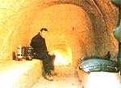
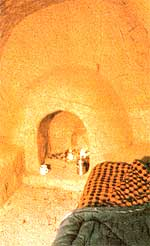

If you've ever fantasized about quiet little place in the woods, you'll love . . .
Located at the base of a gently sloping hill and opening onto the placid Eco-Village lake, MOTHER's "root cellar turned cave" (it was too nice to leave to the vegetables) was the source of a good bit of excitement when it was built in conjunction with last summer's Earth-Sheltered Homes Seminar. Of course, part of the attraction of this type of shelter is its simplicity . . . not only of construction and design, but of maintenance as well. Because there are no exterior walls, for example, the structure requires no summertime consuming paint jobs. And two (hardworking) people took only five days to build the cave . . . using some shovels, a mattock, an auger to dig the chimney and a tile spade to smooth the interior.
Furthermore, with six to eight feet of soil "roof" providing insulation and protection from cave-in, a solar chimney, and an air vent at the threshold, our burrow will typically maintain a closed-door temperature of between 45 and 60°F year round. So, if a similar cave were located in a hillside next to your home, it'd be great not only for storing cool loving vegetables, but for prechilling milk, and-with a smoldering fire built outside the open door perhaps for smoking meat or fish as well.
The 6' X 7' X 10' chamber is all but airtight with the door, floor vent, and chimney flue closed. When opened, though, the latter two provide the grotto with a continual current of fresh air. You see, a 6"diameter ABS plastic pipe-just inside the door-drops down to five feet below the floor vent and then gradually slopes away from the entrance (running within a gravel bed) before turning upward to end in an intake that breaks the surface about 25 feet away. The cool pipe works, in conjunction with the solar chimney, by drawing outside air down through the intake to the buried tube and into the chamber.
The chimney itself-a well casing that's been painted black to absorb solar energy-projects four feet above the ground, and draws cool air from the cave into its sun-heated metal length. As the rapidly warming air makes its way up the chimney, the pressure inside the cave lowers, and more ground-cooled air flows from the buried pipe into the cave to reestablish atmospheric equilibrium within the chamber. This constant give-and-take provides an effective and natural ventilation system. (See MOTHER NO. 73, page 134"My Mother's House: Part IV"-for more details about this type of setup. To order back issues, turn to page 68.)
The tube also keeps the cave nice and dry, since at the lowest point in the pipe-there's a "T" which allows any moisture that has condensed along the line to drain away.
A prospective cave dweller needs to be absolutely sure that the soil he or she has chosen to dig into is of a composition that will permit safe tunneling. The ceiling of the burrow will likely have to be at least four feet below the surface to guarantee that the work will take place in the dense subsoil that makes excavating such a passage feasible. Our subterranean shelter was dug out of heavily weathered and decomposed (yet very sound) rock that was 30 to 35% clay.
The most important consideration in the excavation of such a nook is to maintain a perfectly arched ceiling during all phases of the construction process. This can be accomplished by using a pattern, made from either lumber or rebar, shaped to match the proposed arch of the chamber. To form the initial curve, we simply placed our pattern against the side of a cutaway hill . . . etched its outline into the soil . . . removed the guide . . . and then dug out the doorway with shovels. After every half-foot or so of forward progress, the pattern was moved back into position to help us maintain the shape of the ceiling vault. Painstaking accuracy is required because the structural integrity of the entire cave is based on attaining an arch that is not at all tilted or lopsided. Obviously, it's crucial to get it right the first time!
(Of course, since the retreat isn't intended for actual residence, it may not tall under the jurisdiction of local building codes. But to be on the safe side, you should investigate any such ordinances in your area.)
In order to help maintain the correct curve and provide a dust-free interior, it's best to protect the sculpted walls and ceiling with metal lath and a plaster composed of one part portland cement and four parts excavated dirt. This produces a smooth surface that won't flake or chip off, and that allows the digger to follow his or her own decorating fancy . . . adding murals, stucco, or even wallpaper!
The total cost of MOTHER's project was approximately $60. This included $30 for the solar chimney's ten feet of well casing and $25 for the plastic intake pipe. We've found that our cave stays quite dry and comfortable, even after several days of prolonged heavy rains ("toad drowners", as they're called here in western North Carolina). In fact, upon opening the door after a period of many months, we were delighted to find not only that all the interior surfaces were solid and dry, but that the air within was cool, fresh, and thoroughly pleasant.
Whether the burrow is used as a demonstration during the seminars, as an Eco Village workers' hideaway for a reprieve from the summer heat, or simply as a private resting spot from which to watch the sun set over the lake . . . this snug, appealing cave is a welcome addition to MOM's property, and should be useful for many years to come.
EDITOR'S NOTE:Dave Carter, who conducted the Earth-Sheltered Homes Seminar for the last two seasons, will be back again this year. Dave has written three books about underground construction. Digging In and The Grown Man's Tunneling Guide are available, for $7.50 and $4.95 respectively-plus 95d shipping and handling-from Mother's Bookshelf °, P.O. Box 70, Hendersonville, North Carolina 28791. His newest book, Building Underground, will be available soon.
|
 After a hard day's work on MOTHER's properly, ECO-Village Director Leroy Richter takes a rest in MOM's cave and finds it snug and comfortable . . . even after periods of prolonyed heavy rainfall. |
 Part of the o t t raclion of such a shelter is its sim elicit y. A floor vent and a solar chimney keep o continual current of fresh air flowing through the chamber. Given a co=y fire and a hot drink, what workurcary suburbanite wouldn't find this an. ideal place fear a temporary retreat? |
|